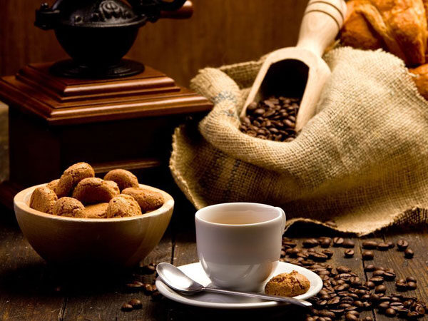

What Is Coffee and Why Is It Important?
Coffee is one of the most enjoyed beverages in the world, made from roasted coffee beans. It offers a rich aroma, unique flavors, and a natural boost of energy. Beyond taste, coffee brings people together—it’s a drink shared during conversations, work, study, and relaxation. For many, coffee is an essential part of the daily routine, helping them stay focused, productive, and refreshed.
"Coffee is the fuel that turns dreams into action.”